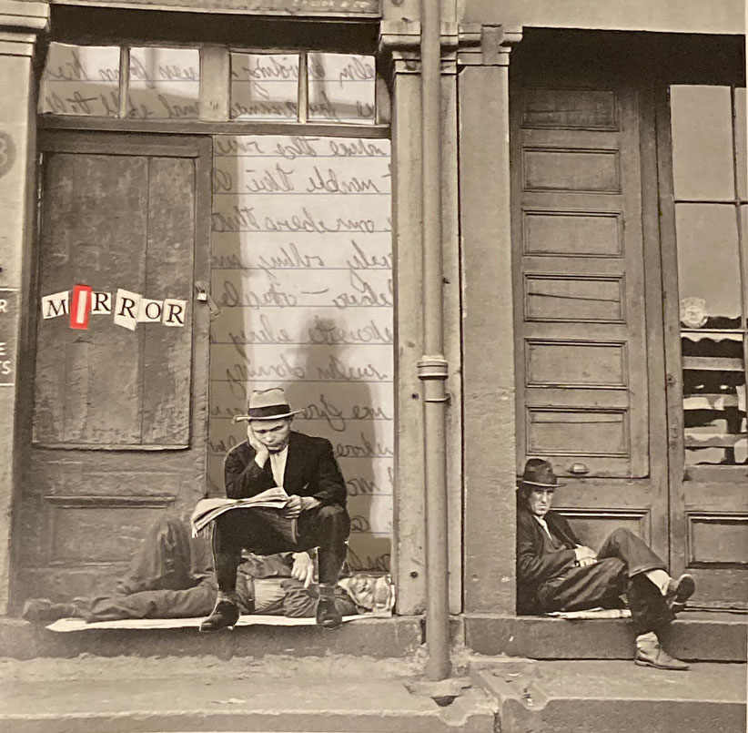

CHARM
CHARM is an alternative rock duet project from New Orleans. Stay tuned for
releases and tour dates!
NEW SINGLE OUT NOW!
Click the link below to save "MIRROR" on Spotify
Save MIRROR
Stream MIRROR now!
WHO ARE WE?
Derived from the white nights of Russia’s Northern Capital, Saint Petersburg, and the vast mountains of North Carolina, Charm is an independent alternative rock duet that synergizes Ivan Plokhikh’s bright guitar riffs with Emma Jackson’s experimental synth and poetic lyrics. The two musicians met in a songwriting class during their music studies at New Orleans’s Loyola University and quickly developed an interest in each other’s talents. They started their journey as collaborators with the goal of blending their styles in order to create an honest and charming album. As of today, their music aims to convey the raw and turbulent nature of the human experience.